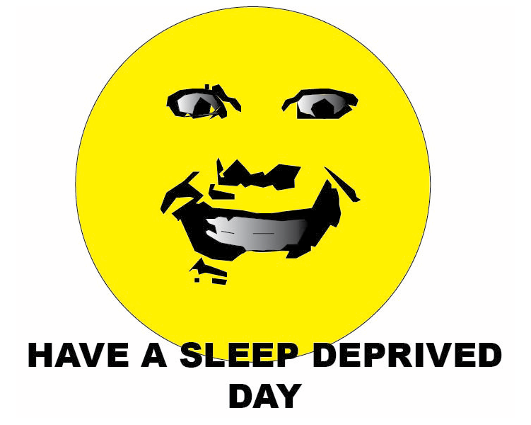
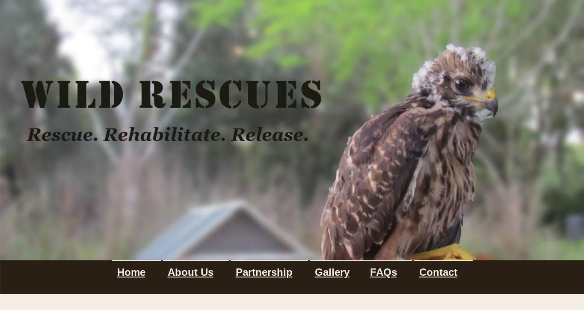

My name is Chase Wiles, a junior at CASA in the AT Academy.
My Personal Favorite Projects
Project 1 – How are you?: I had so much fun doing this because it was a moment where it just pops in your head and you stick with it.
Project 2 – wildlife Website: I liked learning about all the different viewports and other forms of css that can go into a website. 
Project 3 – Albu Project: We had to make our own song in garageband, using a specific theme with a group of othres to make an album. don't remember our theme perfectly but it was really fun, the thought of making music has always excited me